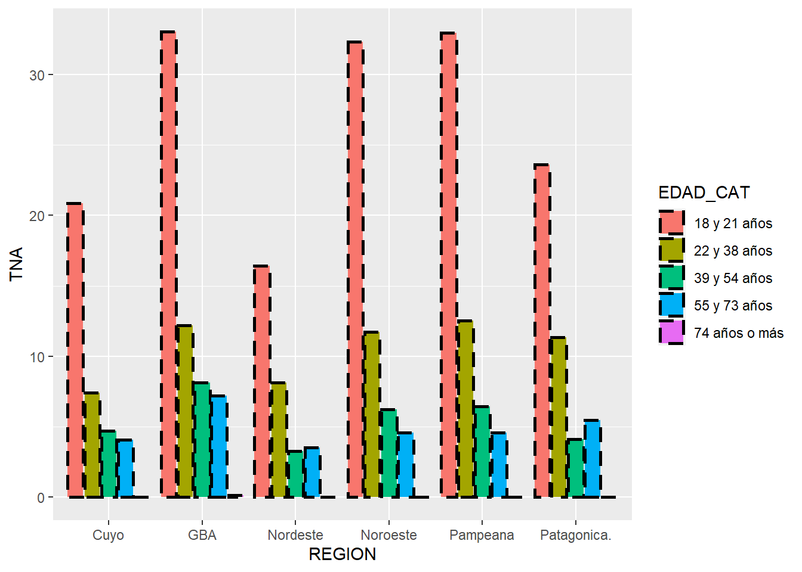

GGPLOT
El 10 de junio de 2007 ocurrió un gran acontecimiento que marcó el comienzo de una nueva forma de concebir la visualización de datos. Ese día, el desarrollador y estadístico, Hadley Wickam publicó un paquete fundamental en el mundo de R: ggplot.
A partir de ese momento, el paquete fue ganando terreno alcanzando millones y millones de descargas. Pero, ¿qué significa ggplot? Es la combinación gg y plot. El prefijo gg hace referencia a la “gramática de los gráficos”. Todavía seguimos en un nivel de abstracción muy alto. Se entiende por gramática a la parte de la lingüística que estudia la estructura de las palabras y sus accidentes, así como la manera en que se combinan para formar oraciones; incluye la morfología y la sintaxis. De esta manera, ggplot se comprende como una estructura de palabras que se combinan para permitirnos realizar diferentes y variadas representaciones gráficas a través del uso del lenguaje R.
Por su parte, además de su traducción tradicional del inglés al español como gráfico, nos gusta entenderlo con otro de sus significados: “trama”. El origen de esta palabra hace referencia al conjunto de hilos que, combinados y enlazados entre sí, consiguen darle forma a una tela. De manera sencilla, ggplot proporciona un conjunto de funciones que se combinan para formar una representación gráfica. Vamos a conocer la potencialidad de este paquete a través de la práctica.
Para bucear en este hermoso paquete, utilizamos tres variables: región, generación y tasa de desocupación para ir analizando las potencialidades de este paquete.
CARGA DE DATOS
Para ver los diferentes tipos y elementos de los gráficos utilizando este gran paquete que es ggplot, trabajamos con la Encuesta Permanente de Hogares (EPH). La intención es poner en relación la región del país (NOA, NEA, GBA, CUYO, PAMPEANA y PATAGÓNICA), las generaciones (18 a 21 años, 22 a 38, 39 a 54, 55 a 73, 74 o más) y la tasa de desocupación. Este último indicador es el cociente entre los desocupados (Todas las personas de 10 años y más que no trabajaron en la semana de referencia, estaban disponibles y buscaron activamente trabajo) y la población económicamente activa (suma de ocupados y desocupados) multiplicado por 100.
# Activamos las bibliotecas a utilizar
library(tidyverse)
library(eph)
# Selecciono las variables a utilizar
variables <- c("REGION","CH06", "ESTADO","PONDERA")
# Cargo la tabla
eph <- get_microdata(type = "individual",
year = 2021,
trimester = 1,
vars = variables)
# Construcción de resumen con información laboral
eph_region <- eph %>%
filter(CH06 >= 18) %>%
mutate(EDAD_CAT = case_when(CH06 <= 21 ~ "18 y 21 años",
CH06 >= 22 & CH06 <= 38 ~ "22 y 38 años",
CH06 >= 39 & CH06 <= 54 ~ "39 y 54 años",
CH06 >= 55 & CH06 <= 73 ~ "55 y 73 años",
TRUE ~ "74 años o más")) %>%
group_by(REGION, EDAD_CAT) %>%
summarise(POBLACION = sum(PONDERA),
OCUPADOS = sum(PONDERA[ESTADO == 1]),
DESOCUPADOS = sum(PONDERA[ESTADO == 2]),
INACTIVOS = sum(PONDERA[ESTADO == 3]),
TNA = DESOCUPADOS/(OCUPADOS + DESOCUPADOS)*100,
TNA_O = OCUPADOS/(OCUPADOS + DESOCUPADOS)*100) %>%
organize_labels(type = "hogar") %>%
mutate_at(.vars = c("REGION"), ~as.factor(.)) %>%
mutate(REGION = ifelse(REGION == "Gran Buenos Aires", "GBA",
paste0(REGION)))
# Visualizo la tabla para la ejercitación
eph_region## # A tibble: 30 x 8
## # Groups: REGION [6]
## REGION EDAD_CAT POBLACION
## <chr> <chr> <int>
## 1 GBA 18 y 21~ 914403
## 2 GBA 22 y 38~ 3426505
## 3 GBA 39 y 54~ 3299452
## 4 GBA 55 y 73~ 2593123
## 5 GBA 74 años~ 787913
## 6 Noroeste 18 y 21~ 190045
## 7 Noroeste 22 y 38~ 706274
## 8 Noroeste 39 y 54~ 544985
## 9 Noroeste 55 y 73~ 400261
## 10 Noroeste 74 años~ 121389
## # ... with 20 more rows, and
## # 5 more variables:
## # OCUPADOS <int>,
## # DESOCUPADOS <int>,
## # INACTIVOS <int>,
## # TNA <dbl>, TNA_O <dbl>CONTENIDOS
1. Primeros Pasos
1.1. Formas de iniciar
1.2. Gráfico de dispersión
1.3. Gráfico de línea
1.4. Gráfico de barras
1.5. Gráfico de diagrama de cajas
1.6. Facetado
1.7. Otros tipos de gráficos
2. Escalas
2.1. Continuas X e Y
2.2. Colores y rellenos
3. Mejorando la visualización
3.1. Titulos
3.2. Eje secundario
3.3. Temas
3.4. Temas personalizados
PRIMEROS PASOS
1.1. FORMAS DE INICIAR
Como primera aproximación a la visualización con este paquete, creamos un gráfico de puntos con la intención de analizar hacia dentro de las generaciones cómo es la dinámica de las regiones en término de desocupación. Para esto, indicamos en el eje X la generación, en el Y la tasa de desocupación y en cada punto la ubicación de las regiones Para esto utilizamos ggplot(). Veamos el código:
#Indicamos a R la creación del área del gráfico con sus respectivos ejes x e y
ggplot(data = eph_region, aes(x = EDAD_CAT , y = TNA))
Que decepción. Pero, ¿qué pasó? ¿Por qué está vacío el gráfico? Simplemente, porque indicamos a R que represente los ejes cartesianos, pero no la forma ni el contenido. Pero… , ¿qué sucedió? ¿Por qué sólo aparecen los ejes? ggplot() permite construir un objeto ggplot, es decir una representación gráfica, pero falta agregar todas las especificaciones. Esta función de inicialización, puede ser utilizada para declarar la tabla que vayamos a utilizar y para detallar el conjunto de especificaciones estéticas (ejes, colore, rellenos, tamaño, etc.), que son comunes a todos las subsecuentes capas a menos que se especifiquen otros criterios.
Según la documentación de esta función hay tres maneras distintas de invocar a ggplot.
ggplot(df, aes(x, y, other aesthetics)): se recomienda si todas las capas usan la misma tabla (df) y los mismos criterios estéticos. También, se pueden agregar capas usando datos de otra tabla.
ggplot(df): este tipo de invocación específica la tabla a usar para el gráfico pero no los detalles estéticos. Este tipo es utilizado cuando se utiliza una tabla de manera predominante pero los criterios estéticos pueden variar de una capa a la otra.
ggplot(): se usa para iniciar un “esqueleto” de un objeto ggplot a la que se le agregan las diferentes capas. Es recomendable utilizar cuando utilizamos múltiples tablas para producir diferentes capas.
ggplot() utiliza el + para agregar los diferentes componentes del gráfico. Se destaca que estos tipos de objetos funcionan por capas. A modo sencillo, siempre que corramos únicamente la función ggplot() sin ninguna otra capa, devuelve el “lienzo” sobre el que va a representar la información. El arte aparece cuando agregamos las sucesivas capas. En nuestro ejemplo, especificamos a R que la tabla que utilizamos se llama “eph_region”, el gráfico está formado por un eje X con el nombre de las generaciones, un eje Y con la tasa de ocupación, y un “relleno” a partir de la variable región.
Sin embargo, no detalla el tipo de gráfico que queremos. Como mencionamos arriba, queremos puntos que ubiquen a regiones en estos ejes. ¿Se imaginan el nombre de la función que permite realizar este tipo de gráfico?. Esto lo hacemos, agregando a nuestra línea de código inicial una capa con la función geom_point(). Geom significa geometría y point significa punto. Entonces, esta función representa puntos en los ejes cartesianos. Otra vez, traduciendo la función al español todo es más fácil. Recuerde que para concatenar las capas no sirve el pipe (%>%), se utiliza el signo +.
ggplot(data = eph_region, aes(x = EDAD_CAT , y = TNA)) +
geom_point()
Previo a continuar, recordemos que ggplot está basada en la gramática de gráficos, la idea de que se puede construir cualquier gráfico a partir de los mismos componentes: datos, un sistema de coordenadas y objetos geométricos (geom) - marcas que representan los puntos de datos (cheatsheet ggplot). Les queremos mostrar una plantilla que sirve para armar nuestras visualizaciones.
(FUNCIÓN_GEOM)(mapping = aes(ESTETICOS) +
(FUNCIÓN_ESCALA) +
(FUNCIÓN_TEMA) +
(FUNCIÓN FACETADO) (EN CASO DE QUE HAGAN ESTE TIPO DE GRÁFICOS)
Veamos en la siguiente sección cómo continuamos con nuestro gráfico de dispersión a través de ir agregando nuevas capas y funciones. También, en las siguientes partes de las guías nos sumergimos en cada una de las funciones que forma parte de la plantilla.
1.2. GRÁFICO DE DISPERSIÓN
El gráfico de punto, o también conocido como gráfico de dispersión, es usado para visualizar la relación entre dos variables continuas, una continua y una categórica o dos categóricas. Dentro de este tipo de geometrías, podemos aplicar los siguientes criterios estéticos (aes()).
Criterios estéticos de posición: Indicamos la posición de las variables. Es decir, qué variable representamos en el eje x y cual en el y.
- x (posición)
- y (posición)
# Gráfico de dispersión ----
ggplot(data = eph_region,
aes(x = EDAD_CAT,
y = TNA)) +
geom_point() 
Criterios estéticos: Veamos qué sucede con aplicación de algunos de los criterios estéticos:
- color: cambiar el color de los puntos
## Color ----
ggplot(data = eph_region,
aes(x = EDAD_CAT,
y = TNA)) +
geom_point(aes(color = REGION))
- shape: definición del tipo de forma
## Shape ----
ggplot(data = eph_region,
aes(x = EDAD_CAT,
y = TNA)) +
geom_point(aes(color = REGION),
shape = 22)
- size: aumentamos o disminuimos el tamaño
## Size ----
ggplot(data = eph_region,
aes(x = EDAD_CAT,
y = TNA)) +
geom_point(aes(color = REGION),
fill = "black",
shape = 22,
size = 1)
- fill (cambiar relleno) y stroke (cambiar tamaño de los bordes)
## Fill ----
# No todas las formas tienen fill
ggplot(data = eph_region,
aes(x = EDAD_CAT,
y = TNA)) +
geom_point(aes(color = REGION),
fill = "black",
shape = 22,
size = 1)
## Stroke ----
ggplot(data = eph_region,
aes(x = EDAD_CAT,
y = TNA)) +
geom_point(aes(color = REGION,
stroke = 2),
fill = "black",
shape = 22,
size = 2)- alpha: transparencia de los puntos
## Stroke ----
ggplot(data = eph_region,
aes(x = EDAD_CAT,
y = TNA)) +
geom_point(aes(color = REGION,
stroke = 2),
fill = "black",
shape = 22,
size = 2,
alpha = 0.5)1.3. GRÁFICO DE LÍNEA
Un gráfico de línea permite conectar las observaciones en el orden que aparece en la tabla (geom_path) o del eje x (geom_line). En el caso, de que quisiéramos unir de acuerdo a un “grupo” (por ejemplo unir los puntos de acuerdo a la evolución de la tasa de desocupación según la generación) podemos especificarlo en el criterio estético group.
Criterios estéticos de posición: Indicamos la posición de las variables. Es decir, qué variable la representamos en el eje x y cual en el y.
- x(posición)
- y (posición)
## ¿Qué pasa si únicamente especificamos? ----
ggplot(data = eph_region, aes(x = EDAD_CAT , y = TNA)) +
geom_line()
Si no especificamos el grupo dentro del aes(), sucede que r interpreta que tiene que unir con una línea los valores de la tasa de desocupación en cada región. Pero nuestro interés está en ver la evolución de la tasa de desocupación según los grupos de edad. Por esto, tenemos que agrupar las líneas por la variables de la generación(EDAD_CAT). Veamos cómo hacerlo usando group.
Criterios estéticos:
- group
## group: Agrupamos para mejorar nuestra visualización ----
ggplot(data = eph_region, aes(x = EDAD_CAT , y = TNA)) +
geom_line(aes(group = REGION))
- colour: color de la línea
## Color de la línea ----
ggplot(data = eph_region, aes(x = EDAD_CAT , y = TNA)) +
geom_line(aes(group = REGION, color = REGION))
- size: tamaño de la línea
## Tamaño de la línea ----
ggplot(data = eph_region, aes(x = EDAD_CAT , y = TNA)) +
geom_line(aes(group = REGION, color = REGION), size = 1)- linetype: tipo de línea
## Tipo de línea ----
ggplot(data = eph_region, aes(x = EDAD_CAT , y = TNA)) +
geom_line(aes(group = REGION, color = REGION), size = 1, linetype = "dotted")
1.4. GRÁFICO DE BARRAS
Un gráfico de líne permite conectar las observaciones en el orden que aparece en la tabla (geom_path) o del eje x (geom_line). En el caso, de que quisiéramos unir de acuerdo a un “grupo” (por ejemplo unir los puntos de acuerdo a la evolución de la tasa de desocupación según la generación) podemos especificarlo en el criterio estético group.
Criterios estéticos de posición: Indicamos la posición de las variables. Es decir, qué variable representamos en el eje x y cual en el y.
- x (posición)
- y (posición)
# Gráfico de barras ----
# Prestar atención a la estructura de nuestra base
ggplot(eph_region) +
geom_col(aes(x = REGION,
y = TNA))## Por esto nos tenemos que valer de las diferentes posiciones de las barras ----
ggplot(eph_region) +
geom_col(aes(x = REGION,
y = TNA),
position = "dodge2")Criterios estéticos: Veamos qué sucede con aplicación de algunos de los criterios estéticos:
- fill: cambio el relleno de las columnas
## fill ----
ggplot(eph_region) +
geom_col(aes(x = REGION,
y = TNA,
fill = EDAD_CAT),
position = "dodge2")- color: cambiar el color de los puntos
## Color ----
ggplot(eph_region) +
geom_col(aes(x = REGION,
y = TNA,
fill = EDAD_CAT),
color = "Black",
position = "dodge2")
- linetype: tipo de línea del borde las columnas
## linetye ----
ggplot(eph_region) +
geom_col(aes(x = REGION,
y = TNA,
fill = EDAD_CAT),
color = "Black",
position = "dodge2",
linetype = "dashed")
- size: aumentamos o disminuimos el tamaño del borde la columna
## size ----
ggplot(eph_region) +
geom_col(aes(x = REGION,
y = TNA,
fill = EDAD_CAT),
color = "Black",
position = "dodge2",
linetype = "dashed",
size = 1)
- alpha: transparencia de los puntos
## Alpha ----
ggplot(eph_region) +
geom_col(aes(x = REGION,
y = TNA,
fill = EDAD_CAT,
alpha = TNA),
color = "Black",
position = "dodge2",
linetype = "dashed",
size = 1)1.4. GRÁFICO DE DIAGRAMA DE CAJAS
El box plot o diagrama de caja, que es un método estandarizado para representar gráficamente una serie de datos numéricos a través de sus cuartiles. De esta manera, el gráfico muestra a simple vista la mediana y los cuartiles de los datos, pudiendo también representar los valores atípicos de estos. A continuación se presentan en la imagen los elementos de un gráfico de este tipo:

Criterios estéticos: Veamos qué sucede con aplicación de algunos de los criterios estéticos:
# Gráfico boxplot ----
ggplot(data = eph_region, aes(x = EDAD_CAT , y = TNA)) +
geom_boxplot() - fill: cambio el relleno
## fill ----
ggplot(data = eph_region, aes(x = EDAD_CAT , y = TNA, fill = EDAD_CAT)) +
geom_boxplot()
- color: cambio el color del borde
## color ----
ggplot(data = eph_region,
aes(x = EDAD_CAT ,
y = TNA,
fill = EDAD_CAT),
color = "black") +
geom_boxplot() 
- size: modifico el tamaño del borde
## size ----
ggplot(data = eph_region,
aes(x = EDAD_CAT ,
y = TNA)) +
geom_boxplot(aes(fill = EDAD_CAT),
color = "black",
size = 0.8)
- alpha: ajusto la transparencia
## Alpha ----
ggplot(data = eph_region,
aes(x = EDAD_CAT ,
y = TNA)) +
geom_boxplot(aes(fill = EDAD_CAT),
color = "black",
size = 1,
alpha = 0.3)1.5. FACETADO
facet_wrap() es una función que nos brinda R, para poder visualizar nuestros gráficos, a partir de generar una representación por separado, según las categorías de una variable de corte. Retomemos el gráfico de barra con las edades, las regiones y la tasa de desocupación. Cuando aplicamos la función facet_wrap() e indicamos la edad como corte, lo que construimos es un gráfico, que compara de esta manera las regiones por cada una de los grupos etarios. Veamos el código y la visualización:
# Facetado por la variables EDAD_CAT ----
ggplot(eph_region) +
geom_col(aes(x = TNA,
y = REGION,
fill = EDAD_CAT),
color = "Black",
position = "dodge2") +
facet_wrap(~EDAD_CAT)1.6. OTROS TIPO DE GÁFICOS
El recorrido que hicimos hasta ahora solo muestra algunas de las potencialidades que tiene este paquete. Sin embargo, les dejamos algunos recursos para que puedan ver la variedad de posibilidades que tiene ggplot:
+ DATA TO VIZ
Es una página que contiene una galería de los diversos tipos de gráficos que se pueden construir en R.
+ CHEATSHEET GGPLOT
Los famosos machetes de R nos brindan de manera resumida y concisa el detalle de las principales funciones de los paquetes. Como vimos con dplyr, a continuación le compartimos la de ggplot.
+ REFERENCIA GGPLOT
Por último, compartimos la página oficial de tidyverse (específicamente de ggplot) con la referencia sobre los distintos aspectos de ggplot.
ESCALAS
2.1. CONTINUAS X E Y
Las escalas controlan los detalles de cómo los valores de los datos se traducen en propiedades visuales. Se pueden “anular” las escalas predeterminadas para modificar detalles como las etiquetas de los ejes o las categorías de la leyenda, o para usar una traducción completamente diferente de los datos a la estética. Las escalas se encuentran fuertemente relacionadas con los criterios definidos dentro del aes(), en el que se definen los valores de X e Y pero también criterios estéticos como el relleno, color de los bordes, opacidad, tamaño, etc. Tanto para los ejes como para los criterios estéticos se puede definir la escala. A los fines de esta introducción, presentamos cómo modificar las escalas continuas de los ejes x e y. Además, cómo cambiar las escalas de colores para el relleno y para los bordes. Sin embargo, invitamos a que sigan explorando este mundo que son las escalas.
Si miramos el gráfico de barras que venimos trabajando, observamos que el eje X contiene los valores de la tasa de desocupación. R por default imprimió el eje X con limites entre 0 y 40 con cortes del eje de 10 en 10. Supongamos, que nos interesa dar “formato” al eje X y que nos interesa que tenga como limites 0 y 30 con cortes de 3 en 3 para visualizar mejor los datos. Vemos el código de cómo se hace esto:
# Escala X e Y continua
ggplot(eph_region) +
geom_col(aes(x = TNA,
y = REGION,
fill = EDAD_CAT),
color = "Black",
position = "dodge2") +
scale_x_continuous(name = "Tasa desocupación",
breaks = seq(1,30, by = 3),
limits = c(0,30))
De esta manera, usando la función scale_x_continuos() y algunos de los argumento modificamos la escala del eje X. En el listado, se presenta un detalle de los argumentos utilizados:
- name: es el nombre que le quedamos dar al eje.
- break: son los cortes del eje. En este caso indicamos que corte de 3 en 3.
- limits: especifica el limite de los datos a visualizar. En el gráfico, limita la información a aquellos valores comprendidos entre 0 y 30.
¿Qué pasa si nosotros tenemos el eje continuo en la Y? Lo único que cambia es el nombre de función: la X por la Y. En vez de llamar a scale_x_continuos(), usamos (scale_y_continuos()).
2.3. COLORES Y RELLENOS
En esta sección aprendemos cómo cambiar la escala de colores. Al momento de trabajar con este tipo de escalas, es necesario tener en claro con el tipo de variables que estamos trabajando. Es decir, si son nominales, ordinales o numéricas. Además, es importante definir previo a la selección de los colores el tipo de análisis que se quiere presentar: ¿es secuencial?, ¿es divergente?, ¿es cualitativo?, etc. Veamos un ejemplo: Por default r nos colorea el relleno de la siguiente manera:
# Default de colores de R
ggplot(eph_region) +
geom_col(aes(x = TNA,
y = REGION,
fill = EDAD_CAT),
color = "Black",
position = "dodge2") +
scale_x_continuous(name = "Tasa desocupación",
breaks = seq(1,30, by = 3),
limits = c(0,30))En primer lugar, definimos, un vector con los colores seleccionados. En este caso puntual, usamos los códigos html del color:
# Definición de colores
colores <- c("#fecc8f","#fbb91f", "#e85362", "#952c80", "#56177d", "#29115a")
# Gráfico con escala manual
ggplot(eph_region) +
geom_col(aes(x = TNA,
y = REGION,
fill = EDAD_CAT),
color = "Black",
position = "dodge2") +
scale_x_continuous(name = "Tasa desocupación",
breaks = seq(1,40, by = 4),
limits = c(0,40)) +
scale_fill_manual("Edades", values = colores)En síntesis, armamos un vector con cinco colores (que es igual a la cantidad de categorías que tiene la variable edad) y con scale_fill_manual() cambiamos el relleno de las barras. Además, entre comilla, si lo desean, pueden poner el “nombre” que quieren que aparezca en la leyenda. Dentro del argumento values escribimos el objeto que contiene los colores que definimos para el gráfico. Este mismo procedimiento se puede aplicar para el “color” de los bordes. La diferencia es que tenemos que llama scale_color_manual()
# Escala de colores: default
ggplot(eph_region) +
geom_col(aes(x = TNA,
y = REGION,
color = EDAD_CAT),
fill = NA,
position = "dodge2") +
scale_x_continuous(name = "Tasa desocupación",
breaks = seq(1,40, by = 4),
limits = c(0,40)) # Escala de colores: manual
# Definición de colores
colores <- c("#fecc8f","#fbb91f", "#e85362", "#952c80", "#56177d", "#29115a")
ggplot(eph_region) +
geom_col(aes(x = TNA,
y = REGION,
color = EDAD_CAT),
fill = NA,
position = "dodge2") +
scale_x_continuous(name = "Tasa desocupación",
breaks = seq(1,40, by = 4),
limits = c(0,40)) +
scale_color_manual("Edades", values = colores)En un mismo bloque de código, pueden combinar escalas de rellenos, bordes, opacidad, tamaño, etc. También, se pueden utilizar escalas pre definidas en algún paquete. Es decir, nos ahorramos la tarea de definir los colores. Una de estos paquetes, que se pueden usar en r, es RColorBrewer.
# Activo paquete
library(RColorBrewer)
# Paletas disponibles
RColorBrewer::display.brewer.all()
A continuación, se presenta un ejemplo usando una de las paletas de este paquete:
# Ejemplo con RColorBrewer
ggplot(eph_region) +
geom_col(aes(x = TNA,
y = REGION,
fill = EDAD_CAT),
color = "black",
position = "dodge2") +
scale_x_continuous(name = "Tasa desocupación",
breaks = seq(1,40, by = 4),
limits = c(0,40)) +
scale_fill_brewer(palette = "Set1")Existen un montón de paquetes para trabajar con los colores de las escalas. Por ahora llegamos hasta acá, pero como siempre los invitamos a que sigan profundizando sobre este tema.
MEJORANDO LA VISUALIZACIÓN
3.1. TITULOS
A los gráficos que venimos trabajando, le faltan los nombres de los ejes, el título y la fuente. Para dar nombre a cada uno de estos elementos, tenemos una función muy intuitivas que es labs(), que resume la posibilidad de escribir el título, los nombres de los ejes, el subtítulo y la fuente. Lo único que tenemos que hacer es aclarar en cada uno de los argumentos de la función, los textos entre comillas que queremos que aparezcan. Sigamos con el ejemplo que estamos trabajando:
# Labs ----
ggplot(eph_region) +
geom_col(aes(x = TNA,
y = REGION,
fill = EDAD_CAT),
color = "black",
position = "dodge2") +
scale_x_continuous(name = "Tasa desocupación",
breaks = seq(1,40, by = 4),
limits = c(0,40)) +
scale_fill_manual("Edad",values = colores) +
labs(y = "Región",
x = "Tasa desocupación",
title = "Tasa desocupación según regiones por edad",
caption = "Fuente: INDEC")3.2. EJE SECUNDARIO
En ggplot, también tenemos la posibilidad de agregar un eje secundario para poder graficar más de una variable numérica. Con sex_axis() podemos construir este eje secundario posicionado en oposición y en relación con el eje primario. Todos los valores del eje secundario, se basan en una transformación uno a uno con respecto al eje primario. Veamos un ejemplo en el que se representa en la misma visualización la tasa de desocupación y la tasa de ocupación.
# Eje secundario ----
## Color de la línea ----
ggplot(data = eph_region) +
geom_line(aes(x = EDAD_CAT , y = TNA, group = REGION, color = REGION)) +
geom_line(aes(x = EDAD_CAT , y = TNA_O/3, group = REGION, color = REGION, alpha = "Tasa ocupación")) +
scale_color_manual("Regiones", values = colores) +
scale_y_continuous(name = "Tasa desocupacion", breaks = seq(0,50, 5),
sec.axis = sec_axis(~ . * 3, "Tasa ocupación",
breaks = seq(0,100,10))) +
guides(alpha = guide_legend("Tasa Ocupación"))En este caso, se observa una transformación de uno a uno del eje primario (se multiplica el eje por tres).
3.3. TEMAS
Ggplot nos brinda una serie de tema personalizado para hacer más lindas nuestras visualizaciones. theme_gray(), theme_bw(), theme_linedraw(), theme_light(), theme_dark(), theme_minimal(), theme_classic() y theme_void(). Para ilustrar su uso, seleccionamos el theme_minimal(). Pueden seguir probando con los otros tipos de temas, lo único que tienen que hacer es sustituir el theme_minimal(), por el tema que quieran:
# Theme minimal ----
ggplot(eph_region) +
geom_col(aes(x = REGION,
y = TNA ,
fill = EDAD_CAT),
position = position_dodge2(padding = 0.2),
width = 0.8,
color = "black") +
labs(x = "Región del país",
y = "Tasa de desocupación",
title = "Tasa de desocupación por generación",
subtitle = "Según regiones. 1T - 2020",
caption = "Fuente: EPH 2020 - INDEC") +
guides(fill = guide_legend(title="Generación")) +
scale_fill_manual("Generación", values = colores) +
theme_minimal()3.4. TEMAS PERSONALIZADOS
Para cerrar esta sección, vamos a trabajar con algunos elementos para personalizar el tema de nuestros gráficos. Por una cuestión de extensión, sólo presentamos el uso de algunos (van a ver que la mayoría de los argumentos de las funciones son similares). Entre los elementos que se pueden customizar se encuentran: los títulos (titulo, subtitulo, ejes X e Y, fuente, etc.), los fondos (panel, área del gráfico, leyenda, etc.), las líneas (ejes, ticks de los ejes, líneas de corte, etc.). Con la función theme() se pueden pasar los diferentes argumentos para personalizar la visualización. A modo de ejemplo se señala en la imagen algunos de los elementos posibles de ser personalizados.
Queremos destacar que cada argumento de la función theme() es acompañada por una de las funciones element_ (puede ser text, rect, line, blank). En la tabla se hace una descripción del tipo de formato que se aplica con cada una de estas funciones.
| Elemento | Descripción | Argumentos |
|---|---|---|
| element_text() | Se utiliza con textos | element_text(family = NULL, face = NULL, colour = NULL, size = NULL, hjust = NULL, vjust = NULL, angle = NULL, lineheight = NULL, color = NULL, margin = NULL,debug = NULL) |
| element_line() | Se utiliza con líneas | element_line(colour = NULL, size = NULL, linetype = NULL, lineend = NULL color = NULL, arrow = NULL) |
| element_rect() | Se utiliza con bordes y fondos | element_rect(fill = NULL, colour = NULL, size = NULL, linetype = NULL, color = NULL) |
| element_blank() | Se utiliza para dejar el argumento en blanco | element_blanK() |
A continuación, a modo de ejemplo presentamos una visualización con alguno de los elementos del tema personalizado. También, se observa la relación entre los argumentos y las funciones element_. Abajo del código, hay una ayuda de que significa cada uno de los elementos del tema trabajado.
ggplot(eph_region) +
geom_col(aes(x = REGION,
y = TNA ,
fill = EDAD_CAT),
position = position_dodge2(padding = 0.2),
width = 0.8,
color = "black") +
labs(x = "Región del país",
y = "Tasa de desocupación",
title = "Tasa de desocupación por generación",
subtitle = "Según regiones. 1T - 2020",
caption = "Fuente: EPH 2020 - INDEC") +
guides(fill = guide_legend(title="Generación")) +
scale_fill_manual("Generación", values = colores) +
theme_minimal() +
theme(axis.line = element_line(colour = "black",
size = 0.5),
axis.ticks = element_line(size = 1),
axis.title = element_text(size = 10),
axis.text.x = element_text(size = 8,angle =45,
hjust = 0.95,
vjust=1),
legend.title = element_text(face = "bold"),
plot.background = element_rect(fill = "#f1f1f1",
color = "#f1f1f1"),
panel.border = element_rect(color = "black",
fill = NA),
title = element_text(size = 12, face = "bold"),
plot.subtitle = element_text(color = "#5D6D7E", size = 10))
| Argumento | Tipo | Descripción |
|---|---|---|
| axis.title = | element_text() | Dar formato al título de los ejes. |
| legend.title = | element_text() | Dar formato al título de la leyenda. |
| title = | element_text() | Dar formato al título del gráfico. |
| subtitle = | element_text() | Dar formato subtitulo del gráfico. |
| plot.background = | element_rect() | Dar formato al fondo del gráfico. |
| panel.border = | element_rect() | Dar formato al borde del panel. |
| axis.line = | element_line() | Dar formato a las líneas de los ejes. |
| axis.ticks = | element_line() | Dar formato a los “ticks” de los ejes. Es decir, la marca que identifica las categorías de las variables en los ejes |
Por último, les dejamos una buena práctica: se pueden guardar un tema personalizado como una lista. De esta manera, lo único que tienen que hacer es llamar esa lista con la personalización de los gráficos. Veamos un ejemplo:
# Settings ----
tema_personalizado <- list(theme_minimal() +
theme(axis.line = element_line(colour = "black",
size = 0.5),
axis.ticks = element_line(size = 1),
axis.title = element_text(size = 10),
axis.text.x = element_text(size = 8,angle =45,
hjust = 0.95,
vjust=1),
legend.title = element_text(face = "bold"),
plot.background = element_rect(fill = "#f1f1f1",
color = "#f1f1f1"),
panel.border = element_rect(color = "black",
fill = NA),
title = element_text(size = 12, face = "bold"),
plot.subtitle = element_text(color = "#5D6D7E",
size = 10)))
ggplot(eph_region) +
geom_col(aes(x = REGION,
y = TNA ,
fill = EDAD_CAT),
position = position_dodge2(padding = 0.2),
width = 0.8,
color = "black") +
labs(x = "Región del país",
y = "Tasa de desocupación",
title = "Tasa de desocupación por generación",
subtitle = "Según regiones. 1T - 2020",
caption = "Fuente: EPH 2020 - INDEC") +
guides(fill = guide_legend(title="Generación")) +
scale_fill_manual("Generación", values = colores) +
tema_personalizado